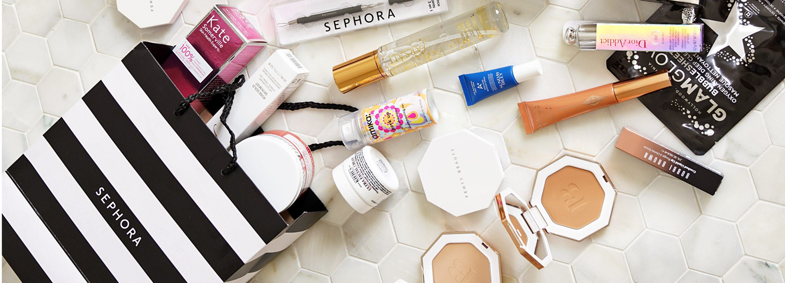
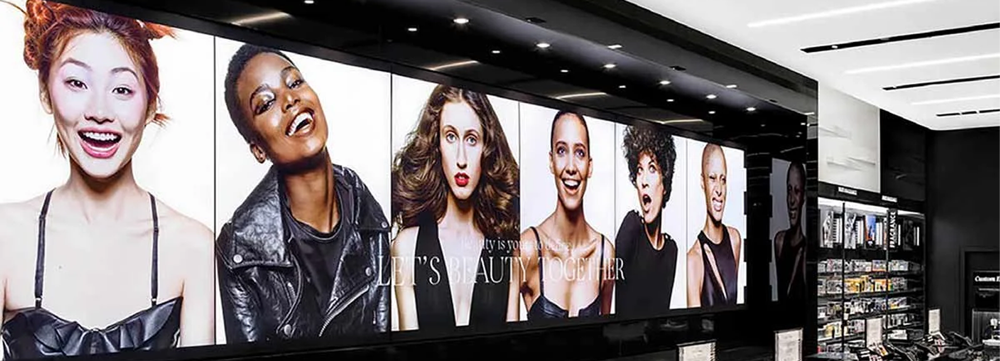
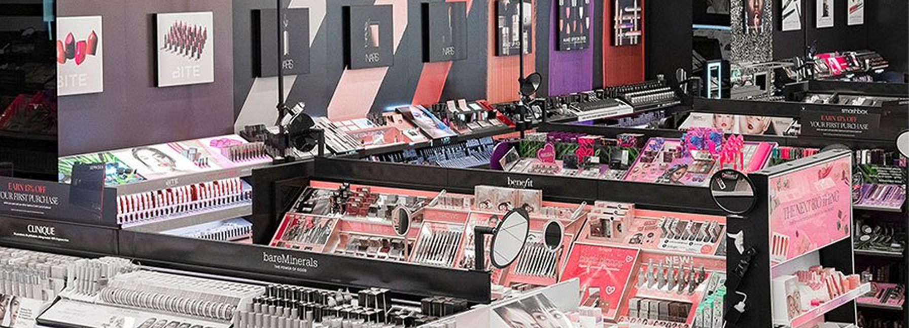
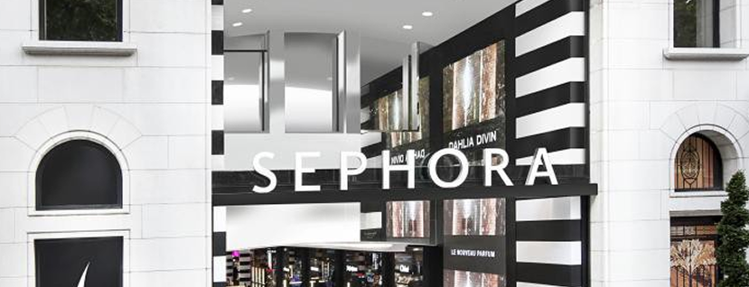

Sephora UX Research Report

Introduction
For my UX research course, I worked within a group of three understanding users' current experience using the Sephora App, with a focus on cart abandonment and ai chat usage.
Across online shopping platforms, 70% of carts are abandoned. Our goal was to gather information to understand why this occurs, and what if anything could be done to prevent this behavior.
Sephora has also introduced a new AI powered beauty chat that can provide detailed, personalized recommendations to customers. We wanted to understand customer sentiment regarding this feature, if and how they use it, how it could be improved, and if wider adoption could be achieved.
View full reportCompany Background
Sephora is a beauty product retailer focused on providing a diverse range of "prestige" beauty products to customers. They aim to provide a curated and personalized experience for shoppers. Sephora sells products through brick and mortar stores, their website, and a mobile application. They also sell through the websites and stores of partnered retailers, such as Kohl's.

Data Collection and Methodology
Desk Research
We consulted sources such as Mintel and Statista to gather preliminary information to help direct our research. We then consolidated all discovered information into 10 key takeaways.

Ethnography
We observed shoppers in a Sephora store at Cherry Creek Mall in Denver, Colorado, for 1.5 hours. During this study we individually took notes about their shopping habits and behaviors. We then discussed and compiled our findings into insights about in store shopping behavior.
Competitive Teardown
We conducted an in depth analysis of Ulta as a competitor bycomparing and contrasting a user journey for both retailers. This helped us understand the tasks and pain points that users encounter in the app to accomplish their goals.
Amazon was also considered for analysis since it is a huge retailer of beauty products, although beauty retail is not their main focus. Ultimately we chose to exclude this from our analysis.
Usability Interviews
As a team we each interviewed three users using a mod guide. These interviews focused on the user's experience using the Sephora app. We had each user speak aloud as they went through the process of purchasing a product on the app and interacting with the AI chat feature. Interviews were conducted both in person and remotely. Interview transcripts were recorded in a spreadsheet, where we identified major trends.
In-Depth Interviews
As a team, we each interviewed one user each in depth about their general beauty and personal care shopping habits. Each interview was unique to the user, with flexibility based on their responses. These interviews were conducted remotely.
Key Findings
- The majority of beauty consumers use online tools(AI, social media, etc.) to discover beauty products. Yet shoppers prefer to visit stores to purchase their products due to the tactile nature of makeup.
- Shopper's in person at Sephora typically only used the app to access loyalty rewards at checkout.
- Sephora's account making process significantly increased users' checkout times. With lack of a guest checkout being a major pain point for most users.
- Users found the account making process tedious and found the app UI cluttered.
- Users found the beauty chat helpful, because it provided relevant information to their questions. However, there was distrust due to lack of citation.

Reccomendations and Impacts
-
Implement guest checkout.
Impact: Creates faster transactions allowing more customers to buy their items and reduce cart abandonment long term.
-
Further refine the AI chat bot to be more credible with citations and less agreeable.
Impact: Credible and informed AI chats will pull in customers to the Sephora app long term.
-
Leverage the Sephora app to incentivize more in store shopping.
Impact: Funneling customers in store through in app ads will drive up foot traffic.
-
Declutter the Sephora app UI by reducing menu items on screen and shorten the checkout process.
Impact: Enhancing the user experience will draw in new customers short and retain customers over time.
-
Host in person events and sales to encourage social interactions and store foot traffic.
Impact: Exciting and unique experiences will position Sephora as a significant social destination maximizing in store sales.